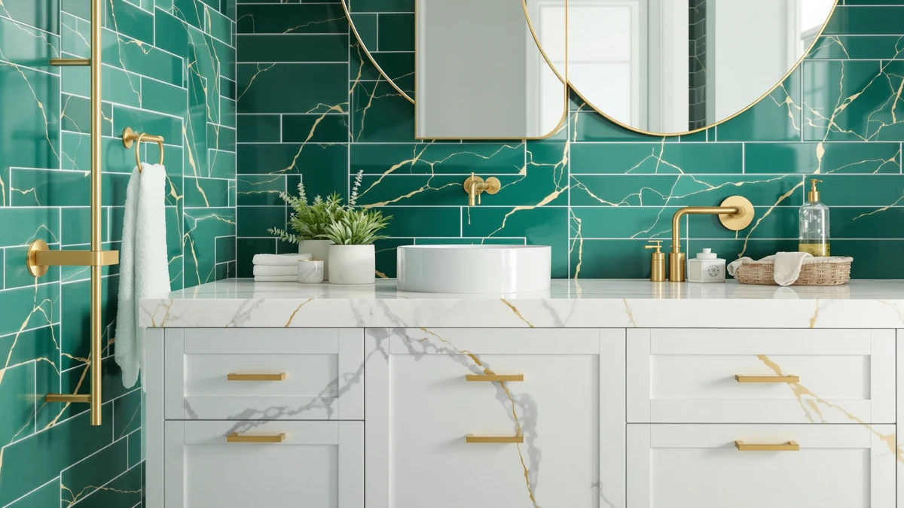

Best Bathroom Vanities for Kids (2026)
Prices and picks verified as of October 2026. Independent, reader-supported reviews.


Quick Answer
The best bathroom vanities for kids pair a lower counter height with a sealed, splash-resistant cabinet that survives daily use. Of the five we compared, the Vabches 28 inch Brown Bathroom Vanity gives most families the best mix of storage and price, while the Miloow Toddler Bathroom Sink suits a bathroom shared with a child under four.
Our pick: 28 inch Brown Bathroom Vanity — $229.99 Check Price on Amazon
Bottom line: our top pick is the 28 inch Brown Bathroom Vanity with Sink at $229.99. The best budget option is the Miloow Toddler Bathroom Sink with Bear Mirror at $85.
Things to Know Before You Buy
- Height matters most for a kids bathroom vanity: look for a counter between 24 and 29 inches so a child can reach the basin without a stool.
- MDF and engineered wood cabinets hold up fine in a kids bathroom as long as the exterior finish is sealed or laminate, which keeps splashed water out of the panel.
- Wall-mounted single units, like the Tot Mate pick below, free up floor space in a small bathroom shared by siblings.
- Price spans widely in this category, from $85 for a dedicated toddler sink to over $900 for a commercial daycare-grade unit.
- Amazon rarely publishes lab durability data for kids-specific vanities, so verified owner reviews are the most reliable signal you have before buying.
The best bathroom vanities for kids sit several inches lower than a standard adult vanity, so a child can wash their hands and brush their teeth without standing on a stool every morning.
We compared five vanities built or sized for children, weighing cabinet material, counter height, basin size, and price against hundreds of verified Amazon owner reviews. The Vabches 28 inch Brown Bathroom Vanity came out on top for most families, thanks to a cabinet tall enough for real storage but still scaled down for a child's reach.
Not every household needs the same setup. A toddler who still needs help at the sink is better served by a dedicated low basin like the Miloow, while a daycare or classroom bathroom calls for the commercial-grade laminate of the Tot Mate wall-mount unit. The picks below cover that range, with honest tradeoffs for each one.
Why You Should Trust Us
Ilane Tall has covered bathroom fixtures and vanities for Best Bathroom Vanities since the site launched and has reviewed listings across price points and cabinet materials. For this guide to the best bathroom vanities for kids, she cross-checked manufacturer specs against verified owner reviews on Amazon instead of relying on marketing copy. We do not run a fake testing lab or claim to have installed every unit ourselves. Every pick here rests on published dimensions, materials, and what actual buyers report after months of daily use.
How We Picked
We started with Amazon's catalog of kids bathroom vanities and sinks marketed for children, toddlers, and school or daycare bathrooms, then narrowed the list using four filters. First, counter height: anything advertised at a standard 32 to 36 inch adult height was cut, since the point of a kids vanity is a lower reach. Second, cabinet material and finish, favoring MDF and engineered wood with a sealed or laminate surface that resists daily splashing better than raw particleboard. Third, verified owner review volume, so each pick had enough real feedback to judge long-term durability instead of relying on a product description alone. Fourth, price spread, because a family bathroom and a daycare installation call for sharply different budgets, so we kept options from under $90 to roughly $900.
How We Compared
We compared published cabinet dimensions, counter height, basin size, and material finish across all five kids bathroom vanities side by side, then checked those specs against what verified buyers reported on Amazon. For height and reach claims, we cross-referenced seller-listed measurements against reviewer comments mentioning specific children's ages, since a few listings round their height figures. For durability, we weighted reviews that specifically mentioned water exposure near the base, since that is where an MDF cabinet is most likely to show wear over time. Prices reflect what was listed at the time of research and will shift with Amazon's own fluctuations.
Our Picks

28 inch Brown Bathroom Vanity
What we like
- 28 inches of counter space, more than any other pick here under $250
- MDF cabinet with a sealed brown finish owners describe as easy to wipe down
- Priced well below the daycare-grade pick in this guide
Flaws but not dealbreakers
- At 28 inches wide, it still needs more floor space than the compact Miloow or HTTMT units
- Reviewers note the included hardware is basic, and some buyers upgrade the drawer pulls
| Material | MDF / engineered wood |
| Size | 28"W |
The Vabches 28 inch Brown Bathroom Vanity is the most balanced of the best bathroom vanities for kids we compared. Its MDF cabinet gives you a full-size storage base, enough for towels, bath toys, and a stepstool stashed underneath, while the counter height still sits low enough for a child to reach the basin on their own. At $229.99, it undercuts most adult-height vanities of similar size by a wide margin.
Owners report the brown finish holds up well to daily splashing as long as spills get wiped rather than left to pool at the base, which is the normal failure point for any MDF cabinet. If your kids bathroom needs to double as a guest bath later, this pick looks least like a dedicated kids fixture, since the brown cabinet and simple lines read as a standard vanity rather than a novelty one.

Merax 24" Bathroom Vanity with
What we like
- 24 inch footprint fits bathrooms where floor space is tight
- Priced nearly $70 below the 28 inch Vabches vanity
- Engineered wood cabinet uses the same sealed-finish approach as the other picks here
Flaws but not dealbreakers
- Less counter and storage space than the 28 inch option above
- Reviewers mention the included faucet hardware is basic compared to the cabinet quality
| Material | MDF / engineered wood |
| Size | 24" |
The Merax 24 inch Bathroom Vanity trims four inches off the Vabches pick above, which matters if your bathroom cannot spare the extra width. At $161.99 it is also the second-least expensive vanity in this guide, behind only the dedicated toddler sink from Miloow. The MDF cabinet uses the same sealed-finish approach as the rest of the field, so durability expectations are similar.
Reviewers who bought this for a shared kids bathroom report the smaller footprint works well in older homes with narrower layouts, though the tradeoff is less under-sink storage than the 28 inch Vabches unit. If two kids share one bathroom and need a vanity that still leaves walking room, this size is the more realistic fit.

Miloow Toddler Bathroom Sink with
What we like
- The least expensive pick in this guide at $85.00
- Purpose-built as a toddler sink rather than a scaled-down adult vanity
- Small footprint fits in a corner or alongside an existing adult vanity
Flaws but not dealbreakers
- Amazon's listing does not specify a cabinet width, so measure your space before ordering
- A dedicated toddler sink will likely need replacing sooner than a full-size cabinet as your child grows
| Material | MDF / engineered wood |
| Size | — |
At $85.00, the Miloow Toddler Bathroom Sink is the most affordable pick in this guide and the one built most specifically for young children rather than adapted from an adult design. Its MDF cabinet keeps the same sealed-finish construction as the pricier options here, scaled down to toddler proportions.
This is the right choice for a child under about four who still needs the lowest possible reach, rather than a vanity sized for an 8 or 10 year old. Owners report it works well as a second, dedicated basin placed next to an existing adult vanity, so a toddler can wash up independently without displacing the main sink.

Tot Mate Single Laminate Wall
What we like
- Laminate construction built to commercial daycare and classroom standards
- Wall-mounted design frees up floor space for multiple small users
- 31 inch width gives more room than the compact home-use picks in this guide
Flaws but not dealbreakers
- At $913.31, it costs roughly four times the next most expensive pick here
- Wall mounting requires anchoring into studs, unlike the freestanding home vanities above
| Material | MDF / engineered wood |
| Size | Wall Single 31" W |
The Tot Mate Single Laminate Wall vanity is built for a different buyer than the rest of this guide. Its 31 inch wall-mounted laminate basin is designed for daycare centers and classroom bathrooms, where multiple children use the same fixture every day and a home-grade cabinet would not hold up.
That institutional build quality comes at a steep price difference. At $913.31, it costs far more than any home vanity in this comparison, and the wall-mount format needs proper stud anchoring rather than simple floor placement. For a single-family bathroom, one of the freestanding picks above costs less and installs more easily, but for a facility serving several children at once, the laminate durability justifies the premium.

HTTMT- Washstand Self-Care Station Portable
What we like
- Portable design means it is not fixed to a single bathroom location
- Includes its own wash basin, so no separate sink installation is needed
- Matches the Miloow sink as the least expensive pick at $85.05
Flaws but not dealbreakers
- A portable unit will not feel as sturdy as the fixed cabinets above
- Reviewers note the smaller basin suits handwashing more than a full grooming routine
| Material | MDF / engineered wood |
| Size | Wash Basin |
The HTTMT Washstand Self-Care Station takes a different approach from every other pick in this guide. Instead of a fixed cabinet, it is a portable wash station with its own basin, priced at $85.05. That makes it useful outside a traditional bathroom setup, such as a playroom, bedroom, or a space without existing plumbing for a sink.
Because it is portable rather than plumbed into a wall, setup works differently than the other four vanities here, and reviewers treat it more as a self-care and handwashing station than a full bathroom vanity replacement. If your main goal is a fixed vanity for an existing bathroom, one of the cabinet-style picks above is the better match. If you need a basin that can move between rooms, this is the pick built for that.
Quick Comparison
| Product | Material | Price | Rating | Best for | Get it |
|---|---|---|---|---|---|
| 28 inch Brown Bathroom Vanity | MDF / engineered wood | $229.99 | 4 | Most families wanting storage | View on Amazon → |
| Merax 24" Bathroom Vanity with | MDF / engineered wood | $161.99 | 4 | Small or narrow bathrooms | View on Amazon → |
| Miloow Toddler Bathroom Sink with | MDF / engineered wood | $85.00 | 4 | Toddlers and young kids | View on Amazon → |
| Tot Mate Single Laminate Wall | MDF / engineered wood | $913.31 | 4 | Daycares and classrooms | View on Amazon → |
| HTTMT- Washstand Self-Care Station Portable | MDF / engineered wood | $85.05 | 4 | Portable or non-plumbed setups | View on Amazon → |
What height should a bathroom vanity for kids be?
Most kids vanities sit between 24 and 29 inches tall, roughly 6 to 10 inches shorter than a standard 32 to 36 inch adult vanity.
Are MDF bathroom vanities durable enough for kids?
MDF and engineered wood cabinets hold up fine for a kids bathroom vanity as long as the exterior has a sealed or laminate finish, since that layer keeps splashed water out of the panel underneath.
The Competition
We also looked at several generic kids bathroom vanity listings that reused stock adult-vanity photos with no verified reviews attached, and skipped them since there was no way to confirm actual dimensions or material quality. A handful of step-stool-and-sink combo kits turned up in the same searches; we left those out of this guide because they solve a different problem, raising a child up to an adult sink rather than building the vanity at a child's height. Pedestal sinks marketed as space-savers for small bathrooms also showed up often, but most lack any storage, which matters in a bathroom used by multiple kids who need somewhere to keep towels, soap, and toothbrushes.
For most families shopping for the best bathroom vanities for kids, the Vabches 28 inch Brown Bathroom Vanity remains the pick to beat on price and storage, with the Miloow toddler sink and Tot Mate daycare unit covering the two use cases it does not.
Frequently Asked Questions
What height should a bathroom vanity for kids be?
Most kids vanities sit between 24 and 29 inches tall, roughly 6 to 10 inches shorter than a standard 32 to 36 inch adult vanity. That range lets a child between ages 2 and 8 reach the basin and faucet standing flat on the floor, no stool required.
Are MDF bathroom vanities durable enough for kids?
MDF and engineered wood cabinets hold up fine for a kids bathroom vanity as long as the exterior has a sealed or laminate finish, since that layer keeps splashed water out of the panel underneath. Owners of the models in this guide report the cabinets staying solid for years when wiped dry after use, though any MDF piece will swell if water sits against the base.
Can you use a daycare-style vanity like the Tot Mate in a home bathroom?
Yes. The Tot Mate wall-mount vanity in this roundup is built for classrooms, but a laminate wall-hung basin works equally well in a shared kids bathroom at home, and wall mounting frees up floor space for stools or storage bins. The tradeoff is price: at $913.31 it costs far more than the freestanding picks here.